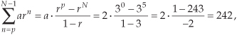

B Closed Form of a Geometric Series
In the literature of digital signal processing, we often encounter geometric series expressions like
or
Unfortunately, many authors make a statement like “and we know that” and drop Eqs. (B-1) or (B-2) on the unsuspecting reader who’s expected to accept these expressions on faith. Assuming that you don’t have a Ph.D. in mathematics, you may wonder exactly what arithmetic sleight of hand allows us to arrive at Eqs. (B-1) or (B-2)? To answer this question, let’s consider a general expression for a geometric series such as
where n, N, and p are integers and a and r are any constants. Multiplying Eq. (B-3) by r gives us
Subtracting Eq. (B-4) from Eq. (B-3) gives the expression
S – Sr = S(1 − r) = arp – arN,
or
So here’s what we’re after. The closed form of the series is
(By “closed form,” we mean taking an infinite series and converting it to a simpler mathematical form without the summation.) When a = 1, Eq. (B-6) validates Eq. (B-1). We can quickly verify Eq. (B-6) with an example. Letting N = 5, p = 0, a = 2, and r = 3, for example, we can create the following list:
Plugging our example N, p, a, and r values into Eq. (B-6),

which equals the sum of the rightmost column in the list above.
As a final step, the terms of our earlier Eq. (B-2) are in the form of Eq. (B-6) as p = 0, a = 1, and r = e–j2πm/N.† So plugging those terms from Eq. (B-2) into Eq. (B-6) gives us
† From the math identity axy = (ax)y, we can say e–j2πnm/N = (e–j2πm/N)n, so r = e–j2πm/N.

confirming Eq. (B-2).